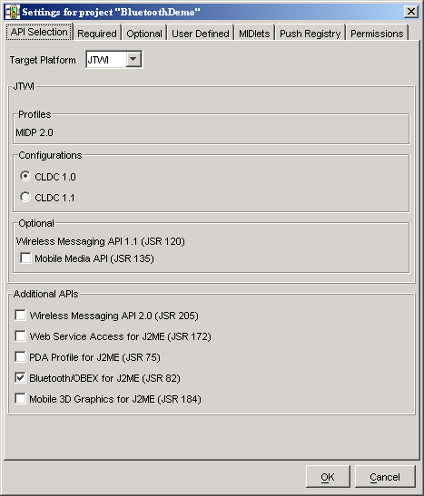
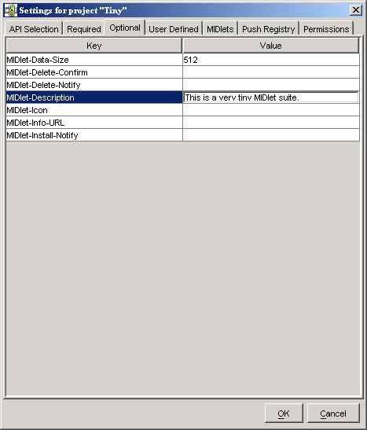
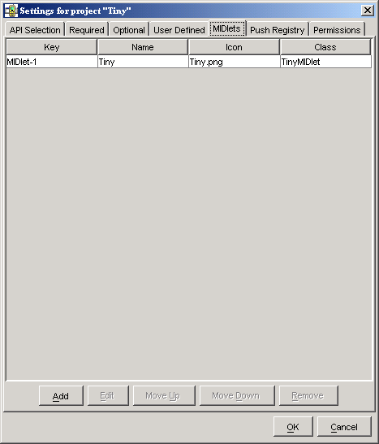
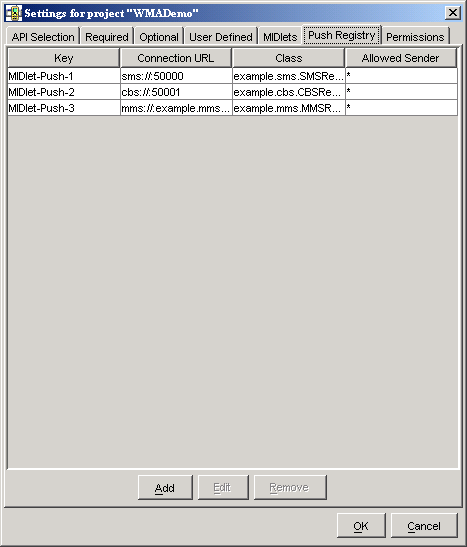

|
|
In the last chapter, you learned how the J2ME Wireless Toolkit helps you with the MIDP development cycle. This chapter delves more deeply into the details of working with projects, including the following:
Each project is built against some set of APIs. The J2ME Wireless Toolkit supports many APIs; the full list is detailed in Chapter 1, “Introduction.” The toolkit allows you to develop applications for some subset of APIs based on the type of devices you expect to run your software.
For example, even though the toolkit supports JSR 184, the Mobile 3D Graphics API, you might want to develop applications that don’t make use of that API. The project’s API Selection settings make it possible to choose only the APIs you want to use.
To see how this works, launch KToolbar and open a project. Then click on Settings... to bring up the following window:

On the API Selection tab, the Target Platform setting controls the appearance of the rest of the tab. Choose the setting that best suits your need, and tweak your selection with the controls below. For example, if you’re developing applications for JTWI-compliant devices, choose JTWI from the combo box. Then use the controls below to specify which version of CLDC you want to use and whether MMAPI should be present.
The toolkit applies your selections when you compile your source code.
The project settings window also allows you to control the MIDlet suite attributes, which are stored in the descriptor as well as the manifest file of the MIDlet suite JAR.
To see the attributes, run KToolbar and open a project. Then click on Settings.... The three tabs that define attributes are Required, Optional, and User Defined.
Consult the MIDP 2.0 specification for the definitions of the required and optional attributes. The J2ME Wireless Toolkit takes care of most of the details. In the early stages of development, you might not have to worry about the attributes at all. Once your application is stable and you’re starting to think about deploying on real devices and going to market, you should come back and adjust the values.
To adjust a value on the Required or Optional tabs, click on the cell next to the attribute key you wish to change. Type in the new value.

To create new user-defined attributes, click on the User Defined tab. Press Add and fill in the key name. You can then edit the attribute value by clicking in the value column next to the key, just as you would with required or optional attributes.
Select an attribute and click on Remove if you wish to remove the key and value entirely.
The project settings also provide a way to add or modify the MIDlets that are contained in the current MIDlet suite project. To see how this works, start KToolbar and open an existing project. Click on Settings... and choose the MIDlets tab. You will see a list of all MIDlets in the project. If you just created a new project, the toolkit automatically fills in the first MIDlet entry.

To add a new MIDlet, click on Add. Fill in the name, icon file name, and class name. You can leave the icon file name blank if you wish. To change values or remove MIDlet entries, use the Edit and Remove buttons.
The MIDlet names are presented to the user in the order shown when the MIDlet suite is launched. You can modify the order by selecting a MIDlet and clicking Move Up or Move Down.
You can also use project settings to work with a MIDlet suite’s push registry settings. Click on Settings... and choose the Push Registry tab.

To add an entry to the push registry, press Add and fill in values for the connection URL, MIDlet class, and allowed sender. To edit an entry, select the entry and press the Edit button. To remove a push registry entry, select it and press Remove.
If you do make push registry entries for your application, make sure you also enter the appropriate permissions. See Chapter 6, “Security and MIDlet Signing,” for details.
Projects have a standard directory structure. The project itself is represented by a directory in {toolkit}\apps. For example, the demos project is contained in {toolkit}\apps\demos. Inside a project directory, the following directories are used:
In addition, the project directory contains a project.properties file which contains information about the project.
If you want to remove temporary directories and files from the project, choose Project > Clean from the KToolbar menu.
The J2ME Wireless Toolkit allows you to incorporate third-party libraries in your applications. Using third-party libraries can cut down on your development time by providing functionality you don’t wish to build yourself, but you should keep a close eye on the size of your MIDlet suite JAR.
When you use a third-party library in your application, your JAR will expand by the size of the third-party library. You can use an obfuscator to reduce the code size, and a good obfuscator will even eliminate whatever parts of the library you are not using. Even with the use of an obfuscator, a third-party library will probably still be larger than your own custom code, carefully written from scratch. You have to evaluate the tradeoff between reducing your development time and the size of your MIDlet suite JAR.
Any library files placed in your project’s lib directory will be included in the building and packaging of your project. Libraries should be JAR or Zip files of Java classes.
For example, if you installed the J2ME Wireless Toolkit in C:\WTK22 and your application is called Tiny, the class library would go in C:\WTK22\apps\Tiny\lib. When you build, run, debug, and package your project, the class files in the lib directory are used.
Some devices have libraries available to all installed MIDlet suites. A manufacturer, for example, can make additional APIs available on all their devices. In this case, you want to be able to use these libraries when you build and test your application. You don’t want the libraries to be included in your packaged MIDlet suite because you will be installing the MIDlet suite on devices where the library is already present.
You can accomplish this by placing libraries in the {toolkit}\apps\lib directory. For example, if you installed the J2ME Wireless Toolkit in C:\WTK22, you would place the class libraries in C:\WTK22\apps\lib. Libraries in this directory are available for all projects.
KToolbar includes some advanced configuration options. You can use these options by editing the {toolkit}\wtklib\{platform}\ktools.properties file. To see the effects of your changes, restart KToolbar.
By default, the J2ME Wireless Toolkit stores applications in directories under {toolkit}\apps. You can change this by adding a line to ktools.properties of the following form:
Any backslash ('\') characters in the directory’s path should be preceded by another backslash. Also, the directory’s path should not contain any spaces.
For example, to set the application directory to D:\dev\midlets, you would use:
By default, the Java compiler uses the encoding set in the J2SE environment that you are running. For information on how to override the default source file encoding, see Appendix C, “Internationalization.”
Using the filterRevisionControl property, you can configure KToolbar to recognize and ignore auxiliary files created by the SCCS, RCS and CVS revision control systems.
To recognize and ignore auxiliary files, include the following line in ktools.properties:
As a result, you prevent KToolbar from treating revision control files as source and resource files. For example, KToolbar would treat a file named src\SCCS\s.MyClass.java as being an SCCS revision control file and not a Java source file.
|
|
J2ME Wireless Toolkit User's Guide J2ME Wireless Toolkit 2.2 |
Copyright © 2004 Sun Microsystems, Inc. All rights reserved. Use is subject to the license terms.